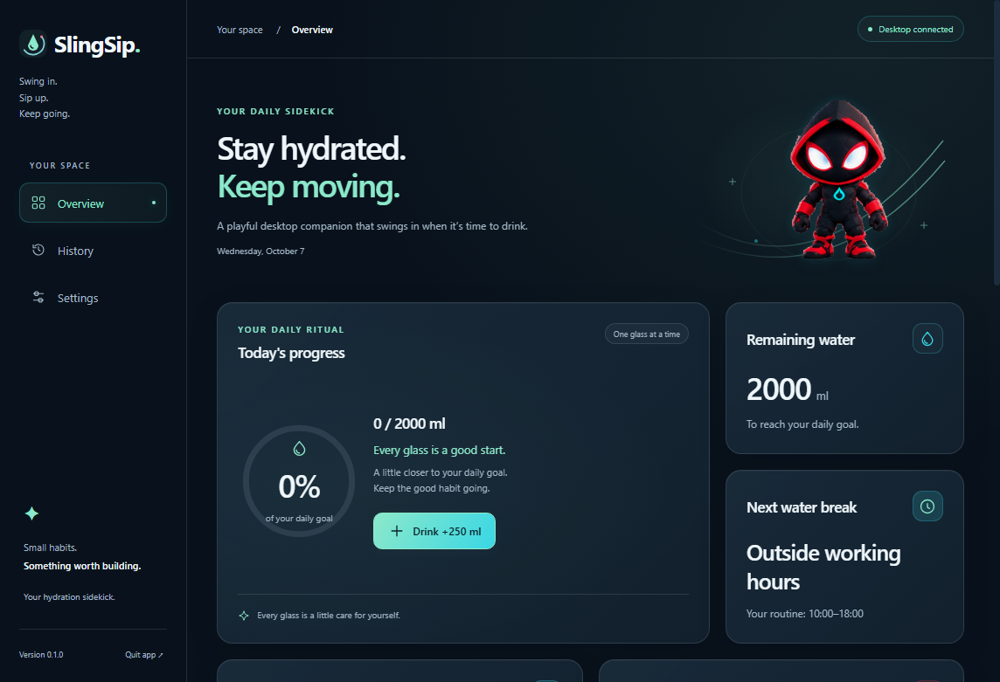
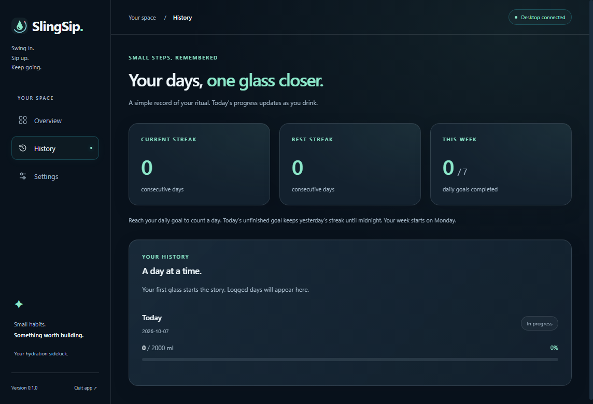
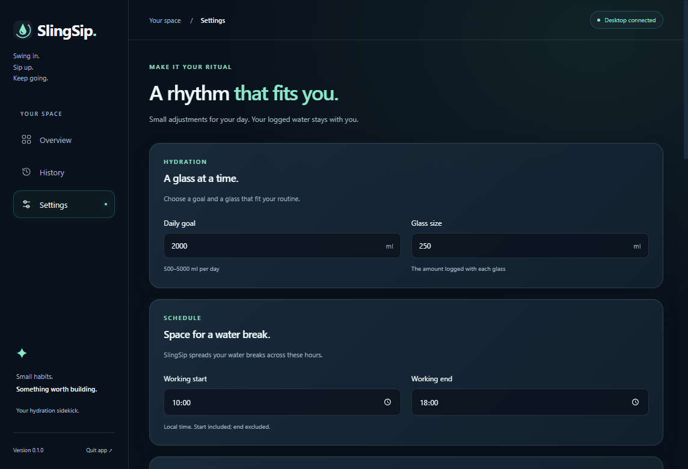
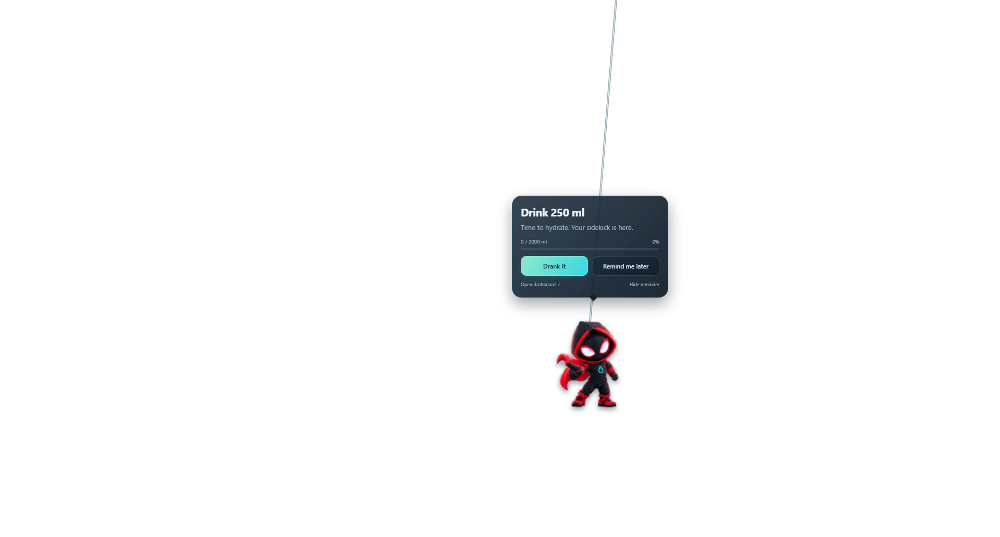
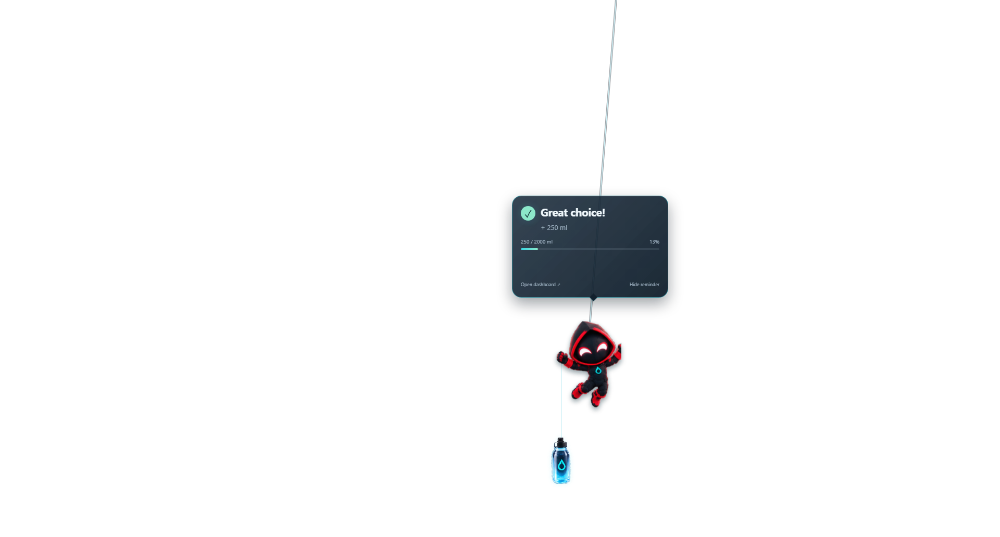

Local production build in an isolated Windows profile, 7 October 2026. Dashboard pages wait for their existing entrance fade to finish. Overlay screenshots preserve alpha; the checker here is only a viewer background.
Read the QA report, validation record and short performance observation. Still images do not prove motion or native click-through. Current artwork quality/crop limitations are recorded in the report.




